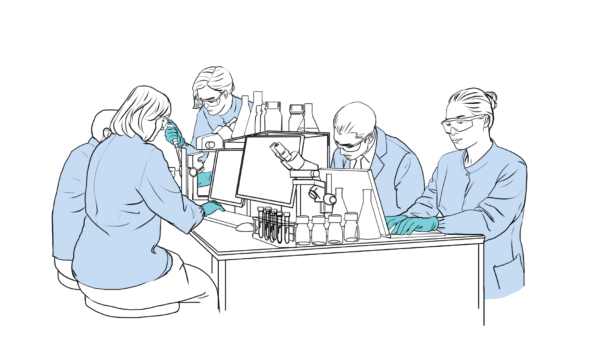
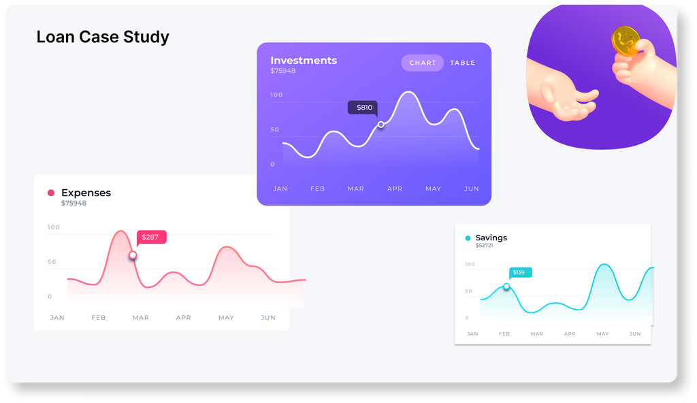

Intro
Hi there, I'm a tech-savvy B.Tech graduate from KG Reddy College of Engineering and Technology, with a passion for diving deep into data oceans. Proficient in MS Excel, MySQL, Python, and the enchanting world of Power BI, I'm your go-to wizard for tasks ranging from Data Analysis, Cleaning, Visualization, to crafting intricate models. I've honed my skills through a guided internship at Trainity, and my certification journey reads like a who's who of data excellence, with badges from Forage, Simplilearn, Internshala, Microsoft, and Cisco, covering Python, Data Science, Data Visualization, and Data Analysis. And to top it all off, I've recently unlocked the coveted certification of Data Analytics Essentials from Cisco and Microsoft. Currently, I'm on an AWS Cloud adventure as an intern at F13 Technologies, where I've already bagged six AWS partner accreditations. Let's decode data together!"
AWS Cloud Intern
F13 Technologies - Remote - Internship
Jul-2023 to Present

- Lead a 5-member team in researching companies that successfully migrated to AWS and also to complete multiple projects.
- Hosted a Dynamic Website using AWS - EC2, RDS and S3.
- Learned about Application of Different Cloud Services.
- Completed Multiple AWS Partner Accreditations.
Data Analytics Intern
Trainity - Remote - Internship
Aug-2022 to Nov-2022
- Completed a guided internship under Experienced Data Analyst and Data Scientists, gaining practical experience in data analysis.
- Analyzed business case studies and addressed problems by applying data analysis techniques.
- Utilized Visualization tools to create insightful visual representation of the data.
- Applied the Data Analytics life cycle, Using SQL and Python to extract, clean, analyze and visualize data.
- Built Key Performance Indicators table and used different metrics to convey the analytics in an efficient manner.
SURVEY BREAKDOWN
Personal Project
Tech Stack - Power BI (Power Query, DAX)
- This project is dedicated to examining and breaking down the results of a survey conducted among professionals in the field of data analysis and provide relevant visualization for the analysis
- Created a dashboard with Power BI to represent different relations and scenarios in people are facing in their professional career
- Cleaned, Transformed and processed the data by using DAX and Excel learnings
- To view the project click Here
COVID ANALYSIS
Personal Project
Tech Stack - SQL, Excel

- Utilized SQL to extract data from 2 different related tables from Covid Deaths and Vaccines databases using JOIN and VIEW
- Transformed and filtered data by using aggregating and filtering function to improve reporting process
- Exploratory Data Analysis on "Covid disease in India and Across Globe" and "Covid vaccination in India and Across Globe". Report some quantities to see the pandemic behavior from Jan-2020 to Apr-2021.
- To view the project click Here
DIVERSITY & INCLUSION
PwC Virtual Experience - Forage
Tech Stack - Power BI, Excel
- Creation of a dashboard in Power BI reflecting all relevant Call Centre's Key Performance Indicators (KPIs)
- Performed data cleaning and text analysis to successfully identified the major complaints for each airline
- Performed Data Cleaning and Preprocessing using Excel then connected the dataset to Power BI to generate powerful visualization and drew insights from it
- To view the project click Here
IG CLONE
Intership - Trainity
Tech Stack - SQL, Excel
- Created a Database with 7 different tables which could represent different features of Instagram
- Utilized SQL to extract data from 2 different related tables from Covid Deaths and Vaccines databases using JOIN and VIEW
- Transformed and filtered data by using aggregating and filtering function to improve reporting process
- This Dataset consist of multiple table which represent different feature similar to that of Instagram such as Users, Photos, Comments, Likes and others.
- Performed and provided solutions for different KPIs
- To view the project click Here
EDA - BANK LOAN CASE STUDY
Internship - Trainity
Tech Stack - Python, Excel

- This case study aims to give you an idea of applying Exploratory Data Analysis (EDA) in a real business scenario.
- In this study, apart from applying the techniques from EDA module, you will also develop a basic understanding of risk analytics in banking and financial services
- Utilized Python to analyze the entire dataset and gain insights on which customers are capable of repaying the loan
- Aggregated and visualized the data by using pandas, matplotlib and word to compile a professional report
- To view the project click Here
About

Top Skills : Microsoft Excel, Microsoft Power BI, SQL, Python and Data Analysis
Hello! I'm a passionate data enthusiast with a B.Tech degree in ECE from KG Reddy College of Engineering and Technology. My world revolves around the magic of data, and I'm fluent in MS Excel, MySQL, Python, and the enchanting realm of Power BI. Whether it's deciphering complex datasets, cleaning messy information, or crafting stunning visualizations, I'm your go-to data sorcerer.
My journey into the world of data began with a guided internship at Trainity, where I had the opportunity to put my skills to the test and gain valuable hands-on experience. Since then, I've been on a continuous quest for knowledge, earning certifications from renowned institutions like Forage, Simplilearn, Internshala, Microsoft, and Cisco. My expertise spans Python, Data Science, Data Visualization, and Data Analysis, and I recently achieved the prestigious certifications in Data Analytics Essentials from both Cisco and Microsoft.
Currently, I'm embarked on an exciting adventure as an AWS Cloud Intern at F13 Technologies. Here, I've earned my stripes by completing six AWS partner accreditations, showcasing my commitment to staying at the forefront of cloud technology.
Outside of my professional journey, I'm also a creator. You can explore my personal projects on my GitHub profile, where I bring innovative ideas to life through coding and data-driven solutions. Let's connect, collaborate, and uncover the endless possibilities of data together!"
Contact